2. Мультимедийные картографические произведения
2.1. Понятие мультимедийного атласа и мультимедийной карты
Картографические
произведения с мультимедийной информацией превращаются в новый вид произведений,
для которых А. М. Берлянтом дано следующее определение: «мультимедийное картографическое произведение
– это электронная карта, атлас,
глобус, буклет, дополненные мультимедийными средствами (текстами, рисунками,
снимками, видеосюжетами, звуковыми клипами и т. п.) и снабженные аппаратом
гиперссылок…» [11, 12].
Однако
следует иметь в виду, что электронная карта может быть не только дополнена, но и
сама изготовлена с применением методов и технологий мультимедиа – например,
путем введения анимационных эффектов в условные знаки. Поэтому приведенное
определение целесообразно дополнить словом «изготовленные» и тогда в
окончательной редакции оно будет сформулировано так: «мультимедийное картографическое произведение
– это электронная карта, атлас,
глобус, буклет, изготовленные и/или дополненные мультимедийными средствами
(текстами, рисунками, снимками, видеосюжетами, звуковыми клипами и т. п.) и
снабженные аппаратом гиперссылок…».
В соответствии с этим уточненным определением сущность мультимедийного картографического произведения можно представить схемой, приведенной на рис. 2. При этом следует иметь ввиду, что дополнительная информация (видео, фото, звук и текст) взаимосвязаны с объектами карты (на рисунке связи показаны штриховыми стрелками).
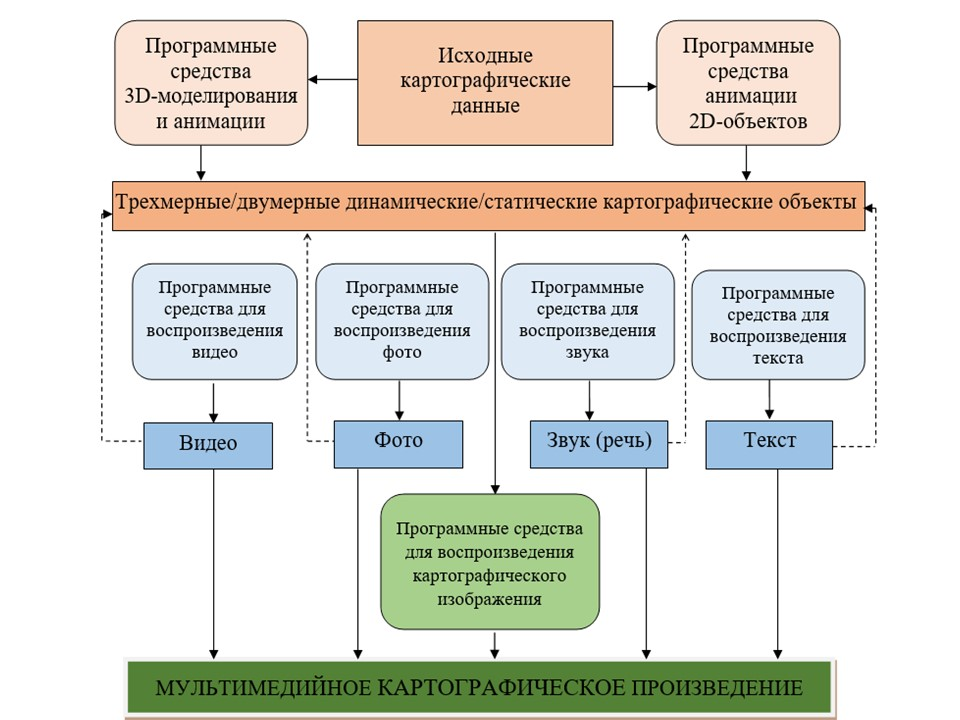
Рис. 2. Сущность мультимедийного картографического произведения
Базовыми
понятиями мультимедийной картографии являются понятия мультимедийной карты и
мультимедийного атласа. Выполненные за последние годы научные исследования
позволяют нам осознать огромные возможности мультимедиа при создании этих
картографических произведений, создают основу для становления и дальнейшего
развития мультимедийной картографии.
Терминология
в части географических карт и атласов с применением мультимедийных средств пока
находится в стадии разработки и до сих пор продолжает претерпевать
изменения.
В
2003 г. нами в работах [15, 16] была
предложена первичная попытка введения в современную картографию терминологии
мультимедиа на примере термина «географический мультимедийный
атлас». Продолжая работу в этом направлении, на основе проведенных
исследований и обобщения опыта уже созданных электронных карт, атласов,
картографо-информационных справочников, в
которых применяются мультимедийные средства, были сформулированы новые определения
«географический мультимедийный атлас» и «географическая мультимедийная карта»
[6, 8].
Обобщением
введенных понятий являются термины «мультимедийная карта» и «мультимедийный
атлас».
Мультимедийная
карта –
это картографическое изображение, построенное с помощью программных и
технических средств, в сочетании разнообразных приемов и методов традиционной
картографии, и мультимедийных элементов, которые привязаны к конкретным объектам
карты. На этой карте картографическое изображение и мультимедийные элементы
интегрированы в единой информационной среде (оболочке), что схематично
представлено на рис. 2 [6,
8].
Мультимедийный атлас – интегрированное собрание интерактивных карт, построенное с помощью программных и технических средств в сочетании с разнообразными приемами методов традиционной картографии и мультимедиа. Этот атлас состоит из нескольких информационных мультимедийных сред, в котором с помощью перекрестных гиперссылок осуществляется совместная интеграция картографических изображений и другой информации в форме текста, звукового сопровождения, графиков, фотографий, видеосюжетов, рисунков, анимации, двухмерных и трехмерных моделей (рис. 3).
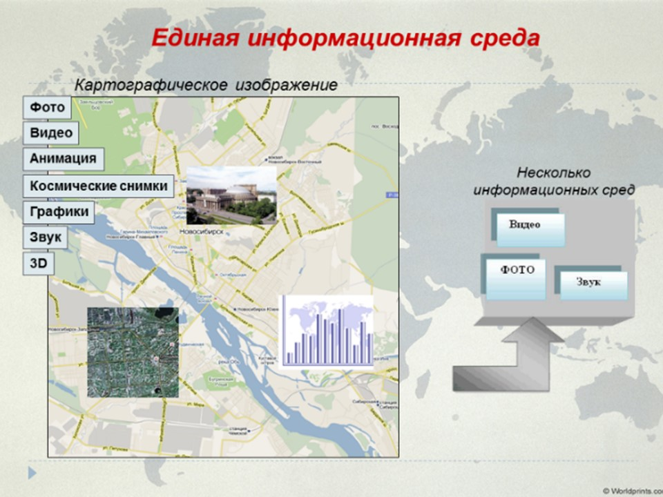
Рис. 3. Графическое представление единой информационной среды
Доступ
к информационным мультимедийным средам в атласе выполнен по гиперфайловому
принципу в интерактивном режиме с помощью пользовательских
информационно-поисковых средств, что
обеспечивается ссылками на один и тот же массив информации из разных мест атласа
(рис. 4).
Если
представлено несколько карт одной территории, отображающей различные временные
периоды, то логичным является применение временной шкалы, позволяющей наглядно
отобразить развитие во времени
и произвести визуальную оценку изменений.
Шкалу разбивают на отдельные отрезки, обычно отображающее одинаковые временные
интервалы, также на ней могут быть нанесены метки ключевых событий, которые
позволяют перейти к фрагменту нужной карты.
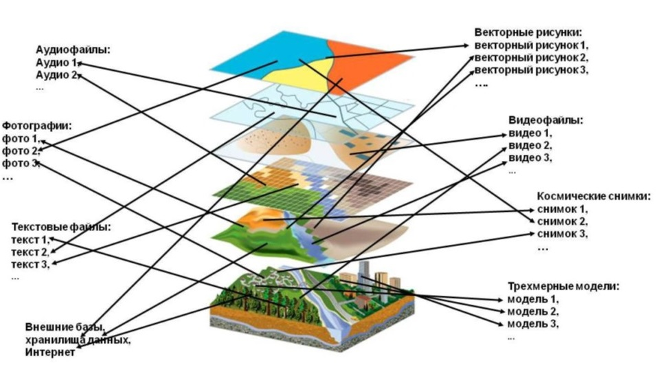
Рис. 4. Гиперфайловый принцип работы мультимедийного картографического произведения
Обычно
программы, предназначенные для создания мультимедийных роликов или презентаций не способны работать с
картографическими проекциями, отображать координаты, рассчитывать масштаб
отображения и для отображения этих параметров приходится производить
вычисления по формулам, в качестве исходных
данных, опираясь, как правило, на пиксели.
Использование
слоев позволяет лучше проанализировать состояние местности путем наложения
нескольких карт на одну и ту же территорию.
Возможность применения мультимедийных методов и гиперфайлового принципа в картографии привела к необходимости переосмысления языка картографического изображения.
Применение мультимедийных методов при создании картографических произведений позволяет в достаточной степени реализовать главную тенденцию современной картографии – предоставление пользователю все больших (но не избыточных!) объемов информации при максимально наглядном ее отображении на основе «индивидуального поиска и/или выбора» информации самим пользователем в рамках картографического произведения и ссылок к интернет-ресурсам. На рис. 5 приведено сравнение традиционного учебного географического атласа на бумажной основе и учебного географического мультимедийного атласа.

Рис. 5. Сравнение традиционного географического атласа на бумажной основе и географического мультимедийного атласа
В
результате исследований выделен ряд преимуществ мультимедийных карт и атласов
перед соответствующими
традиционными картографическими произведениями:
–
новые
формы представления картографической информации (видео, звук, анимация, ссылки в
Интернет);
–
сочетание
интегрированного представления картографируемой территории в целом и
представления отдельных ее объектов более детально с помощью мультимедийной
информации;
–
возможность
картографического отображения динамических процессов и явлений во
времени;
–
применение
условных знаков на картах в динамике;
–
визуальное
уменьшение или увеличение картографического изображения для общего представления
всей территории карты или для более детального рассмотрения отдельных
фрагментов;
–
поиск
необходимой информации на карте и в атласе – автоматический;
–
интерактивное
взаимодействие пользователя с картой и атласом;
–
активное
воздействие карты и атласа на пользователя в процессе работ с ним и
т. д.
Мультимедийные
методы дают возможность по-новому взглянуть на общую теорию языка
картографического изображения и позволяет расширенно трактовать три основных
составляющих семиотических принципов
картографии – семантику, синтактику,
прагматику.
С
позиции семантики, мультимедийные методы
позволяют с большей достоверностью (практически однозначно) соотносить условные
знаки
с самими отображаемыми объектами или явлениями следующим образом:
условный знак на картографическом изображении может иметь прямое визуальное
сходство с обозначенным объектом с помощью совмещенной информации в виде
фотографии или видеосюжета
(например, на карте «Мировые достопримечательности», знак объекта – его
фотография),
а характеристики объекта (без ограничений) находятся в памяти
компьютера и при необходимости доводятся до пользователя с помощью различных
мультимедийных форм.
С
позиции синтактики, мультимедийные методы
позволяют изменить основные правила построения системы картографических знаков
путем использования гиперфайловых ссылок (например, на карте «Автомобильные
дороги» художественный знак может отображать только вид объекта – дорога
(автострада, шоссе и др.)). При этом остальные характеристики находятся в памяти
компьютера и при необходимости выводятся пользователем на монитор в форме
текста, фотографий, видеосюжета, звукового сопровождения и
т. д.
С
позиции прагматики, применение
мультимедийных методов позволяет усиливать информационную ценность условных
знаков как средства передачи информации и особенности их восприятия
пользователями карты, при этом расширяя объем информации об объектах или
явлениях
с помощью гиперфайловых ссылок на дополнительную информацию, такую
как видеосюжет, звуковое сопровождение и анимация. Например, на туристской карте
направления маршрутов могут быть показаны движением стрелок. Эффект мигания
знака можно применять для привлечения внимания к важным объектам карты (музеи,
гостиницы, ориентиры на местности), которые могут быть дополнены фотографиями,
звуковым сопровождением: речь диктора,
музыка, звуковые эффекты среды обитания и т. д.
Одна
из мультимедийных форм – картографическая анимация – предназначена для
дополнения традиционной статичной информации картографического изображения
новыми и очень ей необходимыми динамическими эффектами [11,
12]:
–
дефилирование
цвета и пульсация, изменение интенсивности, создание эффекта
вибрации;
–
изменение
отдельных элементов объектов (условных знаков), их размеров, ориентации,
добавление мигания знаков и др.;
–
знаки
движения разного типа: быстрые, медленные, скачкообразные, эпизодические и
периодические;
–
перемещение
отдельных элементов содержания (объектов и/или явлений) по картографическому
изображению;
–
вращение
трехмерных изображений, изменение точки обзора, ракурса отдельных элементов
содержания.
Важнейшим
требованием к картографическому изображению является читаемость карты, оно заключается в
легкости и быстроте восприятия информации об объектах карты [8,
10].
Рассмотрим
более детально возможности улучшения читаемости картографического изображения,
дополненного файлами мультимедиа в сочетании с гиперфайловым подходом получения
информации.
Легкость
и быстрота восприятия картографического изображения
улучшаются при сочетании представления картографируемой территории в целом и
представления отдельных ее объектов более детально с использованием
мультимедийной информации (фото, видео, звука, анимации, текста, двух- и
трехмерных моделей и др.) с
помощью гиперфайловых ссылок
на основе индивидуального поиска и/или выбора информации
в
интерактивном режиме самими пользователями в рамках картографического
произведения.
Существенное
свойство, влияющее на читаемость карты, –
различимость отдельных конструктивных элементов условных знаков на
картографическом изображении, т. е. читаемость условных знаков зависит
от компактности,
простоты или
сложности начертания (точка, штрих,
линия).
В
классической картографии приходится усложнять конструкцию условного знака для
передачи через дополнительные графические элементы необходимой информации о
картографируемом объекте.
На мультимедийной карте появляется возможность упрощения условных знаков за счет
отбрасывания деталей (которые несут свою смысловую нагрузку), а потери
информации при этом компенсируются путем предоставления дополнительной
мультимедийной информации. С помощью гиперфайловых ссылок осуществляется
двусторонняя связь картографического изображения с дополнительной информацией в
виде текста, фотографий, видео, анимации, звуковых эффектов среды обитания или
речи диктора и т. п.
Еще
одной важной характеристикой
картографического изображения
является наглядность условных знаков.
В
классической картографии наглядность знака является неизменной и отражает связь между внутренней сущностью
объекта и его изображением. Образ, который условный знак создает в
сознании пользователя, формируется не на основе внешнего сходства (подобия)
знака с обликом отображаемого объекта, а на основе знания его смыслового
значения. В зависимости от степени подготовленности пользователь может
«прочитать» знак, узнать и понять его смысловое значение (т. е., что в нем
закодировано), а может и не воспринять его. Ведь условное изображение объектов
или явлений воспринимается неподготовленным пользователем труднее, чем
реалистическое, поэтому карты, как правило, снабжены
легендой.
В
мультимедийной картографии наглядность и степень «читаемости» знаков повышаются
за счет использования мультимедийных эффектов
и файлов. Пользователь лучше
воспринимает информацию о свойствах объекта, когда условные знаки отражают
реалистические изображения объектов картографируемой территории (в форме фото,
видео, анимации, что соответствуют чувственному восприятию действительности),
или они дополнены текстом и/или речью.
Эстетичность
условных знаков на
мультимедийной карте также (благодаря мультимедийным эффектам) характеризуется
большей (в сравнении с классической картой) выразительностью знаков, более
удачным сочетанием форм, размеров и композицией знака, лучшей гармонией
цветового решения.
Повышение информационной емкости условных знаков
обеспечивается тем, что гиперфайловый принцип предоставляет пользователю
практически неограниченные объемы информации о картографируемой территории при
максимально наглядном ее отображении на основе индивидуального поиска и/или
выбора информации самим пользователем в рамках картографического произведения и
вглубь к дополнительной информации в интернет-ресурсах, которые в принципе не
имеют ограничения. Например, на исторической карте удобно использовать пунсоны
населенных пунктов с указанием дат, где происходили важные исторические события
(места сражения, революции, принятие важных постановлений и документов,
выступление партийных политиков и т. д.). Подведя курсор к этому месту и,
указав временной срез, когда происходили события, на экране монитора можно
воспроизвести видеоклипы, фотографии и исторические справки с озвучиванием
текста диктором и т. д.
Метричность
мультимедийной карты сохраняется и позволяет проводить
количественный анализ изображения, в том числе для сравнения объектов разных
форм и размеров, их отдаленности и т. д. Однако если необходимы точные
количественные расчеты, то они могут быть выполнены по данным, имеющимся в базе
данных. Большой объем информации находится «за» картографическим изображением и
доступ к этой «скрытой» информации с всевозможными статистическими показателями
пользователь получает с помощью гиперфайловых ссылок.
С
появлением цифровой, в том числе мультимедийной картографии свойства метричности
и наглядности картографического изображения уже не противоречат, не мешают друг
другу и таким образом, это противоречие практически разрешено [10].
Мультимедийная
карта имеет и другие преимущества перед традиционной картой.
Мультимедийная карта содержит столько информации, сколько не сможет вместить в себя ни одна бумажная карта. Она удобна в обращении, имеет мгновенный допуск к любой информации, так как она имеет иерархическое построение, и вся информация на карте разбита на тематические слои. Мгновенный доступ к любой информации делает такие мультимедийные продукты удобными в обращении, к тому же неоспоримо, что усвоение информации с помощью такой карты намного лучше, а целый ряд нужной информации просто невозможно отобразить на бумаге или она не будет настолько полной и доступной. К тому же при необходимости компьютер позволяет получить с помощью принтера на бумаге копию карты или ее фрагмента, фотографий, текста, графиков, содержащихся на компакт-диске или в сети интернет [16].
2.2. Виды и примеры мультимедийных картографических произведений
В настоящее время на мировом и отечественном рынке мультимедиа имеется множество мультимедийных произведений (продуктов), в которых в качестве пространственной связующей основы используется мультимедийная карта (рис. 6).
Рис. 6. Примеры картографических мультимедиа-продуктов, созданных в нашей стране
Выпускаются
мультимедийные атласы, энциклопедии, учебники, путеводители и другие
картографические
мультимедиа-продукты, которые можно
объединить в четыре самостоятельные
группы:
–
мультимедийные
картографические произведения (карты, атласы);
–
справочно-картографические
ГИС, включающие в себя векторные
и растровые карты с базами данных и
дополнительный мультимедийный справочный материал в сочетании с поисковыми
средствами;
–
картографические
информационно-обучающие системы, включающие в себя векторные и растровые карты с
базами данных и дополнительный мультимедийный справочный материал в сочетании с
поисковыми средствами;
–
информационно-справочные
системы, включающие в себя текстовую
информацию, фотографии, видеофильмы, музыкальное сопровождение и
картографический материал (энциклопедии, путеводители, web-порталы
и т. п.) [8, 11].
Рассмотрим
несколько примеров каждой группы из отечественных
и зарубежных
мультимедийных произведений (продуктов).
Первая
группа – мультимедийные картографические произведения (карты,
атласы).
В
2006 г. А. Ю. Вилковым [17] был создан мультимедийный атлас МГУ. Этот атлас
включает 20 карт, характеризующих природно-экологи-ческие условия территории,
здания, сооружения и их функции, памятники, сферу обслуживания и коммуникации на
территории кампуса. Он предназначен для справочных целей и может быть
использован также для решения задач управления территорией кампуса,
туристско-ознакомительных
и учебных целей. Особенностью мультимедийного
атласа МГУ явилось его создание в период расширения территории кампуса и нового
строительства, что нашло отражение в методах оперативного обновления и
дополнения содержания атласа: карт, справочных, текстовых и иллюстративных материалов. Эта особенность была учтена при
составлении интернет-версий атласа МГУ http://www,geogr.msu.ru^atias/ и
http://www.dataplus.ru:8080/website/msu/, а также в процессе создания «Схемы
расположения зданий МГУ на Ленинских горах» и размещения ее на официальном сайте
МГУ (рис. 7).
А.
А. Медведевым [18] в 2008 г. был создан мультимедийный атлас Курильских
островов, который имеет достаточно развитую систему гиперссылок, абсолютно
замкнутую. Это способствует оперативности работы с атласом и высокой степени
информативности, данный атлас полезен ученым, специалистам-практикам,
проектировщикам, хозяйственникам, управленцам и иным лицам, принимающим решения,
бизнесменам, политикам, вузовским работникам и др. Система визуализации в
мультимедийном атласе позволяет представлять географическую информацию
в
трехмерном виде, динамике (анимации, «виртуальный полет»), работать в
интерактивном режиме (отмечать в картах природоохранные нарушения, планировать
экологические маршруты и т. п.). В атласе разработаны картографические
анимации («Курильская десантная операция», «Сейсмоактивность», «Пути перемещения
циклонов»), которые способствуют более полному и глубокому восприятию
географической информации пользователями атласа. Атлас содержит большое
количество трехмерных моделей (рис. 8, 9), построенных на основе ЦМР (цифровая
модель рельефа).
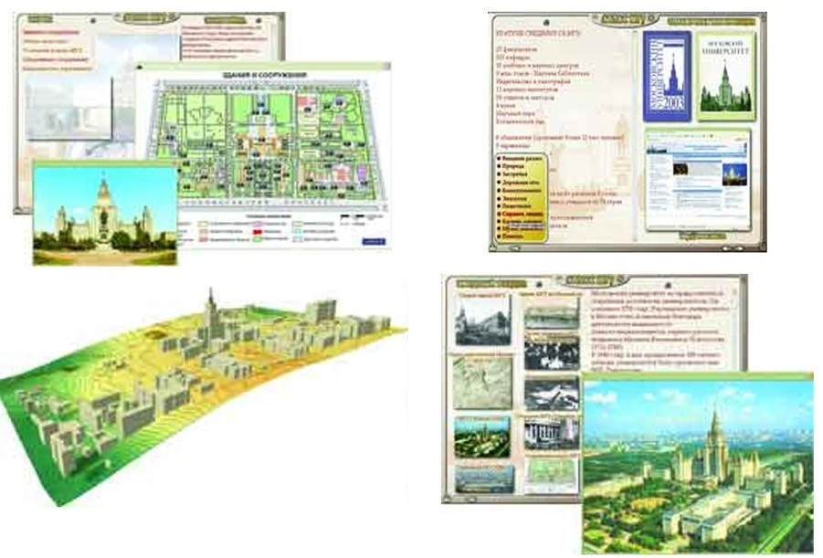
Рис. 7. Мультимедийный атлас МГУ
Рис. 8. Программные окна природоохранного раздела по заповеднику «Курильский» из мультимедийного атласа
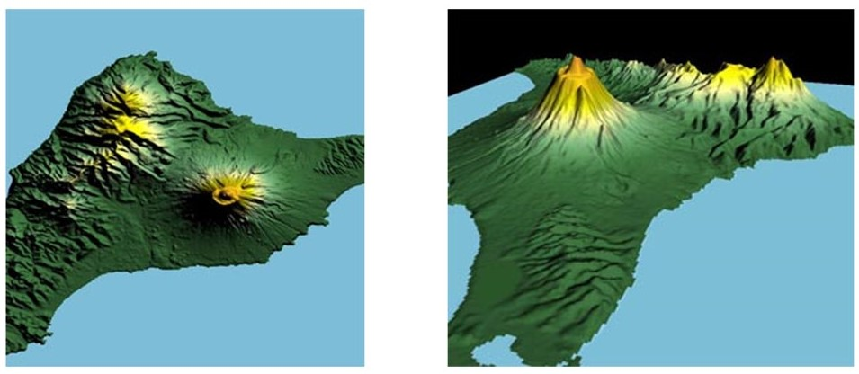
Рис. 9. Фрагменты гипсометрической карты и соответствующей ей трехмерной модели
Согласимся
с мнением А. А. Медведева, что «…обзор и
анализ мультимедийных и электронных атласов свидетельствует о том, что во многих
электронных и мультимедийных картографических произведениях используются не все
современные технические возможности для представления информации. Многие из этих
произведений не соответствуют картографическим нормам и правилам составления как
отдельных карт, так и атласов в целом. Не все мультимедийные и электронные
атласы подготовлены для распространения в сети Интернет или вообще не имеют
такой технической возможности…» [18].
Наиболее
распространена в сети интернет мультимедийная карта Великой Отечественной
войны «Победители – Солдаты Великой войны» (рис. 10), которая показывает
состояние границ стран на протяжении всей Великой Отечественной войны, оснащена
различными мультимедийными данными: фотографиями, схемами, аудиозаписями
рассказов ветеранов Великой Отечественной войны, видео, текстом и
др.
Управление картой возможно посредством шкалы времени. Данный проект используется как дополнительный источник информации и как иллюстративный материал (Победители – Солдаты Великой войны. Мультимедийная карта Великой Отечественной войны [Электронный ресурс] // Сидоров С. В. Сайт педагога исследователя. – Режим доступа: http://www.pobediteli.ru. – Загл. с экрана).
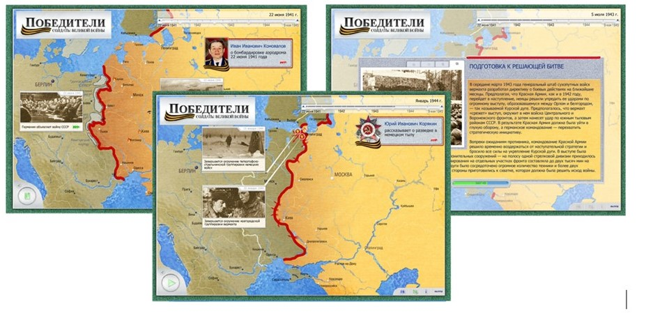
Рис. 10. Мультимедийная карта Великой Отечественной войны «Победители – Солдаты Великой войны»
Один из лучших на сегодняшний день мультимедийный атлас Мира «Новое тысячелетие» (рис. 11) позволяет осуществить навигацию по детализированной карте планеты, содержит краткие путеводители, описания природы регионов, исторические факты различных мест, подробные карты городов. Имеет обновляемую поддержку в интернете. Это не просто атлас, это детализированная энциклопедия планеты. Детальные карты центральных улиц 65 крупнейших городов мира. 3D карты мира, визуализируемые как земной шар и как плоская карта. Около 1,6 миллиона мест, визуализируемых с реальным рельефом и обширной географической информацией. Большое количество фотографий, иллюстраций и анимации. Возможность посмотреть, какой была Земля 50, 100 и 200 миллионов лет назад. Большое количество статей научно-популярного содержания о развитии человечества.
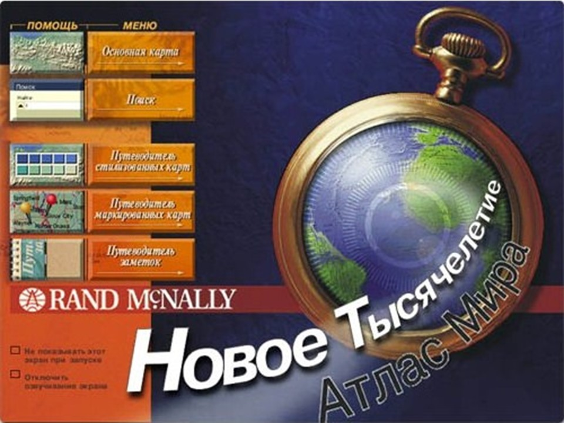
Рис. 11. Мультимедийный атлас Мира «Новое тысячелетие»
Атлас «Новосибирск» посвящен 110-летию г. Новосибирска (рис. 12), он составлен и подготовлен к печати Сибирской государственной геодезической академией (СГГА – СГУГиТ) в 2003 г.
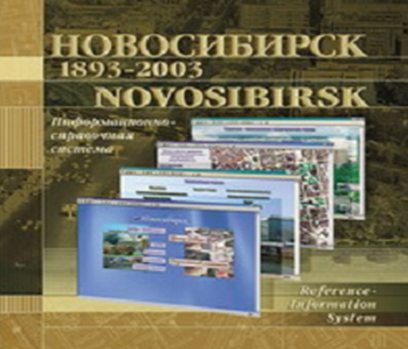
Рис. 12. Мультимедийный атлас «Новосибирск»
Достоинствами атласа являются его подробность, информативность, наглядность, хорошее оформление. Способы отображения и цвета хорошо подобраны, они легко читаются, четко различаются между собой. Атлас дает достаточно полное представление об отображаемых на его картах явлениях и объектах. Разделы атласа согласованны и взаимосвязаны. Старые планы, снимки и фотографии города размещаются в соответствии с обозначенной темой. Атлас содержит 266 карт, 7 планов, 2 аэрофотоснимка, 1 космический снимок, 30 фотографий.
Электронный
атлас Ханты-Мансийского автономного округа для средней школы «Люби и знай свой
край родной»
(рис. 13) на компакт-диске разработан в 2003 г. творческим коллективом на базе
ООО «Сибпромкомплекс», кафедры картографии Сибирской государственной
геодезической академии (СГГА – СГУГиТ) и ОАО «Научно-производственного центра
комплексного мониторинга окружающей среды и кадастра природных ресурсов» (ОАО
«НПЦ Мониторинг») в соответствии с учебной программой преподавания школьной
географии.
Атлас предназначен для изучения физической и экономической географии Ханты-Мансийского автономного округа в общеобразовательных учреждениях, средних специальных и высших учебных заведениях, а также для внеклассной краеведческой работы.
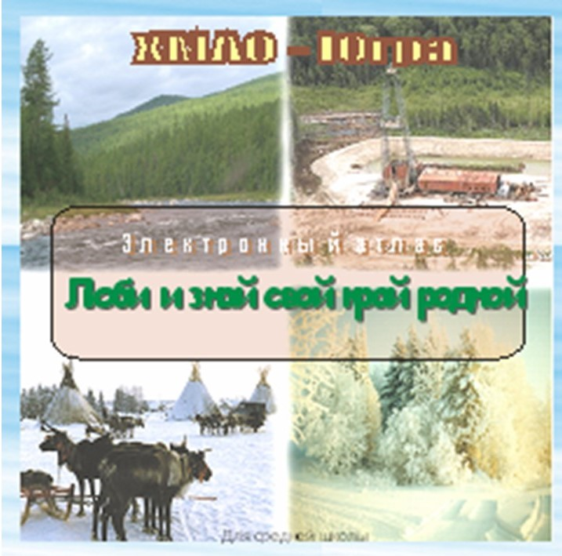
Рис.
13. Электронный
атлас
Ханты-Мансийского автономного округа
– Югра «Люби и знай свой край
родной»
В атласе присутствует руководство пользователя, включающее информацию об установке и запуске программы, командных кнопках, кнопках-помощниках, руководство по работе с картами, текстом, просмотру фотографий и видеосюжетов, музыкальному сопровождению, поиску информации (рис. 14).
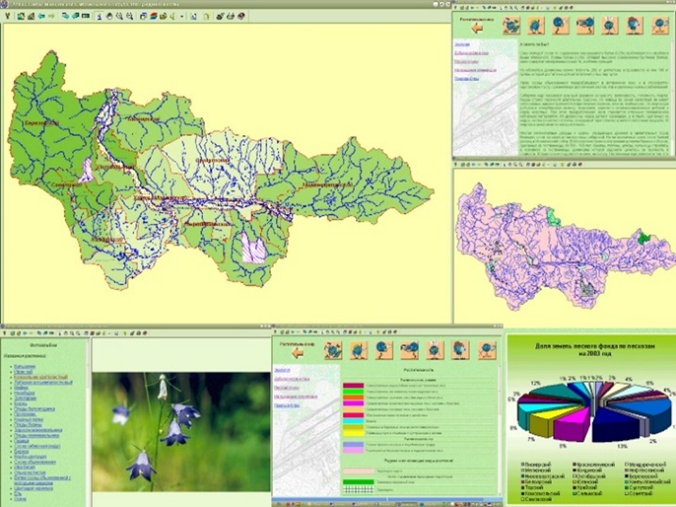
Рис. 14. Страницы раздела «Растительный мир»
Достоинствами
атласа являются
наглядность, полнота содержания, простота использования, хорошее оформление.
Использование дополнительной информации в виде фотографий, видео, звуков, речи
диктора способствует легкому восприятию и запоминанию информации. Достоинством
атласа является также векторное
представление карт, так как это позволяет производить масштабирование,
поиск и отображение найденной информации об объекте, совместное или отдельное
отображение слоев карты, измерение объектов, нахождение кратчайших путей и
т. д.
Электронный
атлас (проект) Новосибирской области «Люби и знай свой край
родной»
(рис. 15) является справочно-картографической мультимедийной системой на CD-ROM
и предназначен для использования
в средних школах на уроках географии и
факультативах по краеведению; при самостоятельной работе дома, в том числе
частично для изучения школьного курса «Физическая и экономическая география
России», а также в системе повышения квалификации учителей по теме
«Использование компьютерных технологий в обучении». Электронный атлас разработан
в 2009 г. в соответствии с учебной программой преподавания школьной
географии. Научно-методические основы школьных электронных атласов апробированы
в школах, одобрены Новосибирским институтом повышения квалификации и
переподготовки работников образования и областным управлением образования
Новосибирской области.
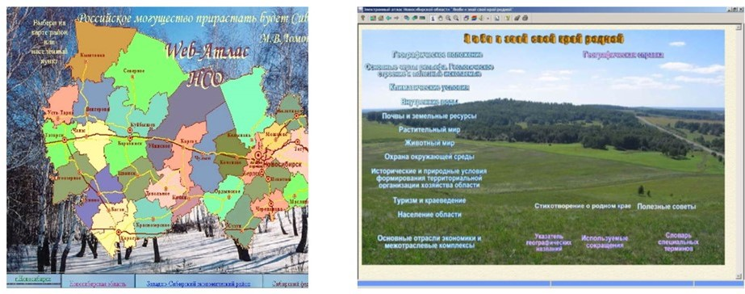
Рис. 15. Электронный атлас Новосибирской области «Люби и знай свой край родной» для средней школы
В
качестве картографических материалов использовано более 40 цифровых векторных
карт Новосибирской области, с точностью, соответствующей масштабу 1 :
300 000.
В
2015 г. Т. С. Молокиной и авторским коллективом кафедры картографии и
геоинформатики СГУГиТ по мультимедийному направлению
в рамках
межкафедральной научно-исследовательской лаборатории «Геоинформационное
картографирование» был предложен новый специализированный вид картографического
обеспечения образовательного процесса – учебная многофункциональная карта
[20].
Разработано
и внедрено картографическое обеспечение, позволяющее реализовывать сложные
интерактивные процессы обучения и преподавания с использованием учебной
многофункциональной карты в современном режиме компьютерного диалога. На
основании выполненных исследований разработаны научно-обоснованные методики
создания и использования учебной многофункциональной карты, на основании которых
созданы экспериментальные образцы учебной многофункциональной карты и
разработаны классификаторы условных знаков и базы данных для обучения в высшей
школе по дисциплинам «История» и «Социально-экономическая
география».
Разработки
данных методик можно квалифицировать как решение важной научной задачи в области
учебной картографии.
Выполнение
работ по созданию макета УМК для использования высшей школы проводилось
на примере дисциплин «История» и «Социально-экономическая география». Макет
выполнен на html
страницах и имеет сетевое построение [20–24].
Для
различных дисциплин и тем дисциплин применялось различное ассоциативное
оформление страниц УМК (рис. 16).
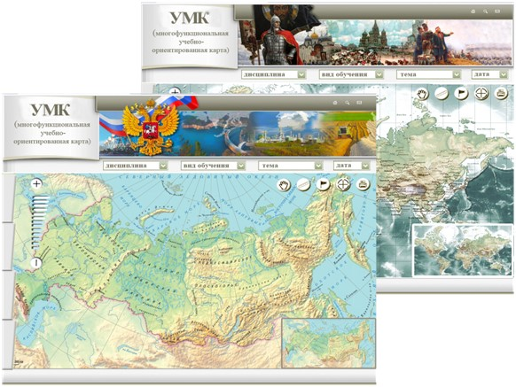
Рис. 16. Примеры страниц макета УМК для дисциплин «История» и «Социально-экономическая география»
Главная страница УМК включает в себя меню выбора режима (рис. 17), кнопки переходов к разделам: база данных мультимедийной информации, руководство пользователя, классификатор условных знаков, редактирование картографических шаблонов.
Рис.
17. Меню выбора режима, включающее перечень дисциплин, видов обучения, тем и дат (периодов,
эпох)
Для
дисциплины «История» был разработан раздел «История Отечества».
Классификатор
условных знаков представляет собой совокупность всех условных знаков,
используемых для конкретной дисциплины. Для раздела «История Отечества»
дисциплины «История» была разработана классификация условных знаков, включающая
условные знаки всех периодов отечественной истории в статике и динамике (рис.
18).
Для
раздела «История Отечества»
дисциплины «История» была
разработана и апробирована на семинаре, посвященном 70-летию битвы за Москву,
анимационная карта «Битва за Москву (30 сентября 1941 – 20 апреля 1942)»
(рис. 19).
На
кафедре картографии и геоинформатики был разработан атлас истории развития города Новосибирска
«Новониколаевскъ-Новосибирск» (рис. 20), который представляет собой
самостоятельное произведение, однако, в последующем оно будет включено в
УМК.
Выполнение
работ по созданию макета картографических
шаблонов для проверки знаний и навыков студентов проводилось на примере
дисциплины «Социально-экономическая география» при помощи программы Adobe
Flash.
Макет
является
учебным и предназначен для изучения социально-эко-
номической географии
России в высшей школе; для формирования географического образа своей страны во всем ее
многообразии и целостности.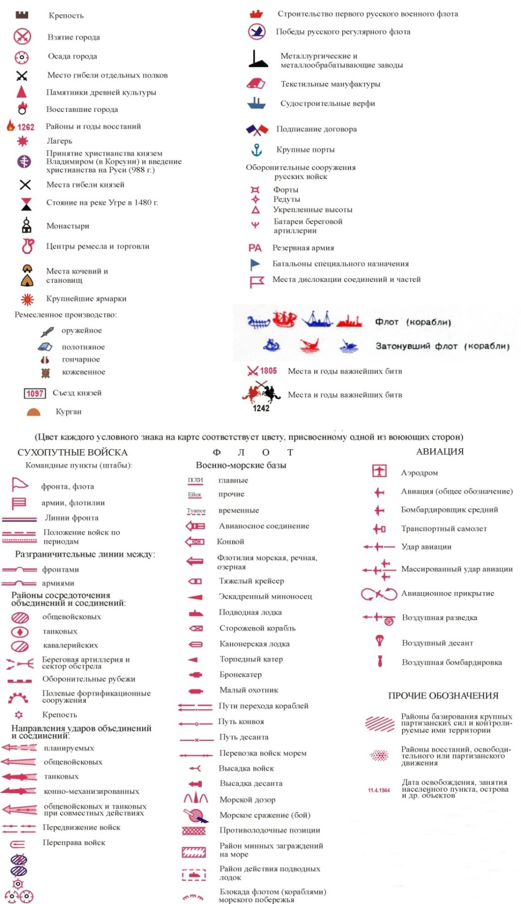
Рис. 18. Классификация условных знаков для дисциплины «История»
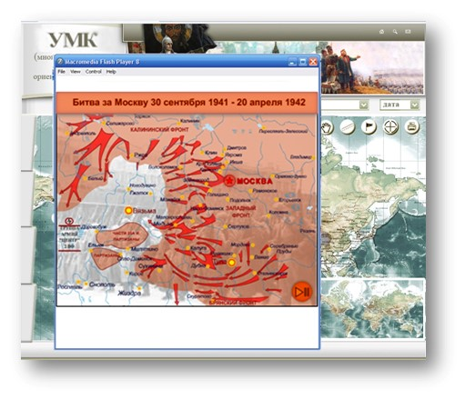
Рис. 19. Пример открытой анимационной карты «Битва за Москву» в разделе «История Отечества» дисциплины «История»
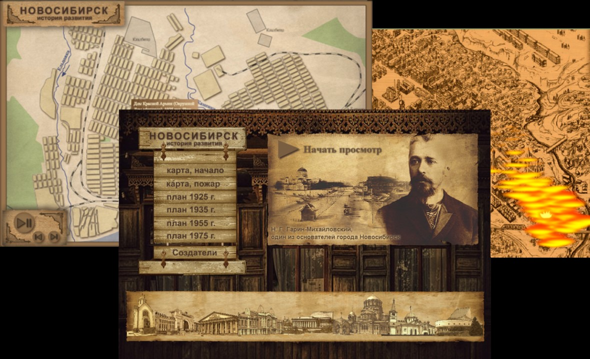
Рис. 20. Атлас истории развития города Новосибирска «Новониколаевскъ-Новосибирск»
Например, тип заданий, требующий ввода с клавиатуры необходимой информации, представлен следующим вопросами: «впишите названия незамерзающих портов России, отмеченных на карте», «впишите названия городов, имеющих заводы по выплавке алюминия, указанных на карте». При этом студенту необходимо щелкнуть по соответствующему текстовому полю и ввести с клавиатуры правильное название (рис. 21).
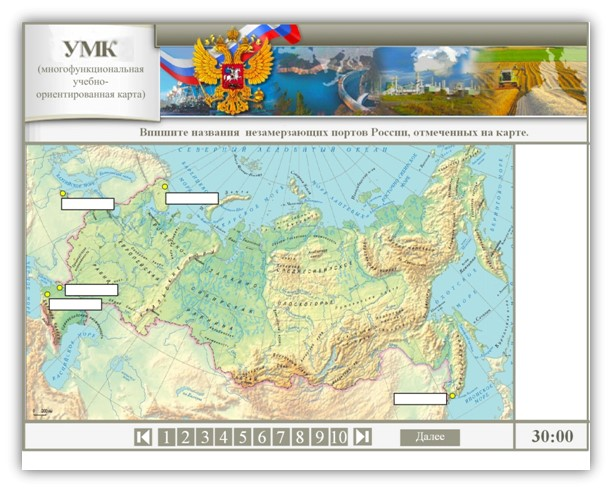
Рис. 21. Пример типа заданий, требующего ввода с клавиатуры необходимой информации
Тип заданий, требующий расстановки условных знаков на соответствующее место на карте, представлен следующими вопросами: «Расставьте знаки на соответствующие им площади залегания топливно-энергетичес-ких полезных ископаемых» (рис. 22) и «Расставьте знаки самых крупных электростанций России» (рис. 23). При этом студенту необходимо, удерживая нажатой левую кнопку мыши на соответствующем условном знаке, указанном в специальном поле «условных знаков», «перетащить» его на соответствующее место на карте.
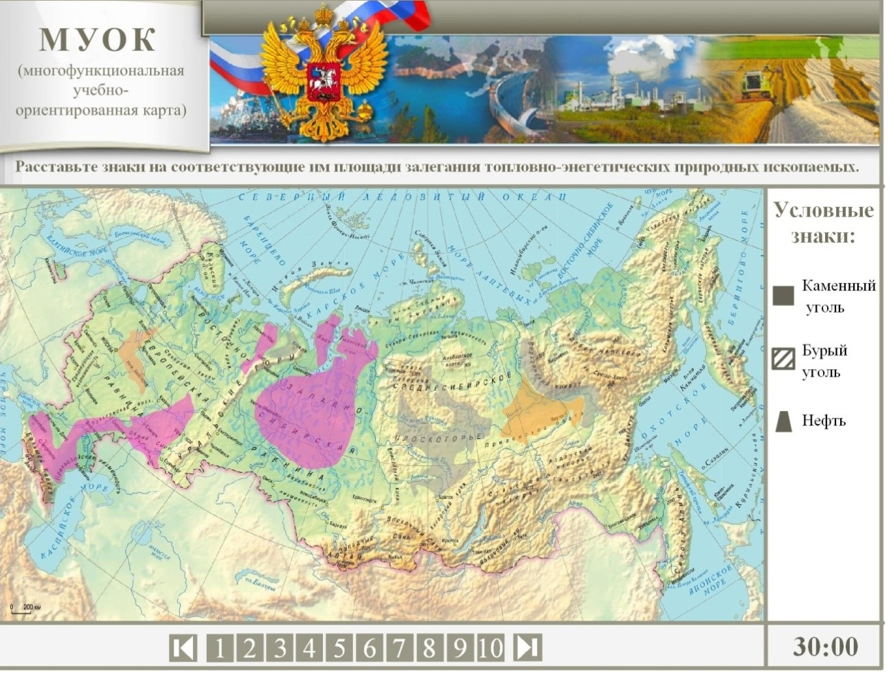
Рис. 22. Пример типа заданий, требующего расстановки условных знаков на соответствующее место на карте (полезные ископаемые)
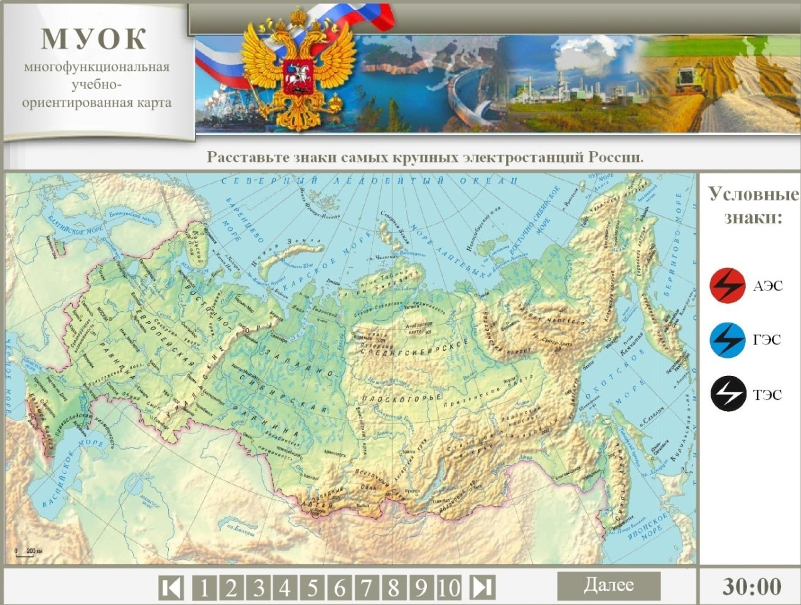
Рис. 23. Пример типа заданий, требующего расстановки условных знаков на соответствующее место на карте (электростанции)
Тип заданий, требующий провести линию на карте, представлен следующими вопросами: «Проведите основную ветку Байкало-Амурской магистрали», «Проведите Транссибирскую магистраль» и «Проведите АЯМ (Амуро-Якутсткую магистраль» (рис. 24). При этом студенту необходимо, удерживая нажатой левую кнопку мыши, провести на карте через необходимые населенные пункты соответствующую магистраль. При проведении мышкой линия будет прорисовываться красным цветом.
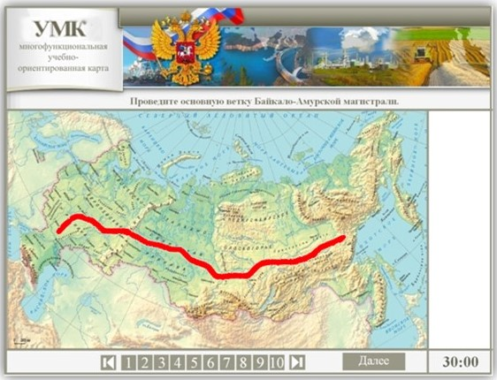
Рис. 24. Пример типа заданий, требующего провести линию на карте
Тип
заданий, требующий поставить на карте отметку, представлен следующими вопросами:
«Установите метку в
городе, в котором находится самое крупное предприятие по добыче и переработке
никеля», «Укажите самую
северную атомную электростанцию России» и «Установите
метку в область, где находятся самые большие разведанные запасы шельфовой
нефти» (рис. 25). При этом студенту необходимо одним щелчком левой кнопки
мыши щелкнуть по соответствующему месту на карте. Курсор мыши при каждом задании
имеет вид определенного условного знака
(в первом вопросе – это знак никеля,
во втором – знак атомной электростанции и в третьем – значок нефти).
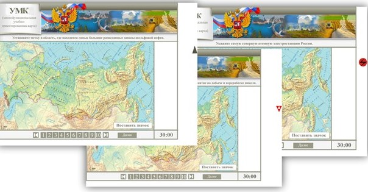
Рис. 25. Примеры типа заданий, требующего поставить на карте отметку
В
результате проведенных исследований созданы два макета:
–
общий
макет УМК
на html
страницах;
–
макет
УМК для проверки знаний и навыков студентов при помощи программы Adobe
Flash.
Они
являются совершенно новым способом представления картографической информации при
изучении дисциплин в высшей школе, позволяют осуществлять проверку знаний и
мониторинг обучения студентов.
Макеты УМК демонстрировались на семинарских, лекционных, практических занятиях и конференциях в Сибирской государственной геодезической академии при помощи интерактивной доски. В процессе просмотра студентами и преподавателями различных кафедр, макеты УМК оценивали, критиковали, высказывали свои мнения, пожелания и рекомендации по дальнейшей работе над ними (рис. 26).
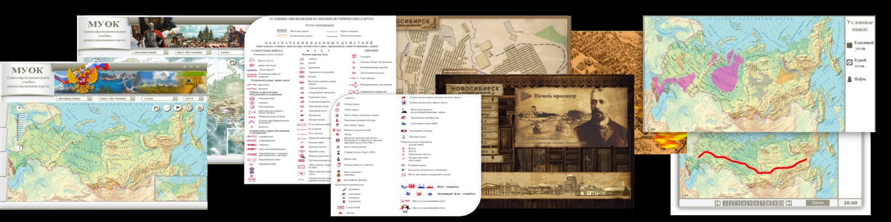
Рис. 26. Примеры экспериментальных образцов УМК
В
разработке карт макетов принимают участие студенты старших курсов
картографической специальности, в рамках студенческой научной работы и
дипломного проектирования. Студентам предлагается на выбор предмет и тематика
будущих карт, ими отрабатываются вопросы заданий отдельныкарт для проверки
знаний с использованием аппаратно-программных средств, в том числе, и
мультимедийных [20–24].
Вторая группа – справочно-картографические ГИС.
и 2001
г.) (рис. 27). Первое издание разработано администрацией Новосибирской области,
Комитетом природных ресурсов и охраны окружающей среды Администрации
Новосибирской области, производственным объединением «Инженерная геодезия».
Второй выпуск подготовлен творческим
коллективом
на базе ООО «Сибпромкомплекс» под руководством Д. В.
Лисицкого.
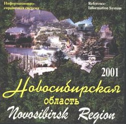
Рис. 27. Справочно-картографическая ГИС «Новосибирская область»
Обновление
информационной базы выполнено на основе сведений, полученных из Новосибирского
областного комитета государственной
статистики
и
подразделений Администрации Новосибирской области, а также публикаций в
СМИ, печатных изданий и сайтов в сети интернет.
Диск
включает разнообразную статистическую и энциклопедическую информацию о
Новосибирской области, ее современном состоянии, экономике, социальной сфере,
населении, природных ресурсах, городах
и районах области, о важнейших
предприятиях и организациях, научно-образовательном комплексе области,
театральной и музыкальной жизни и многое другое.
Текст
иллюстрирован цветными фотографиями (более 250), видеосюжетами о природе и
разносторонней жизни жителей Новосибирской области; в диск включены цифровые
картографические материалы (20), схемы, диаграммы, таблицы; имеется музыкальное
сопровождение [19].
Наиболее характерным и распространенным в России проектом для массового и практически ежедневного использования, являющимся одним из видов справочно-картографической продукции, на сегодняшний день считается система Дубль-ГИС.
Дубль-ГИС –
бесплатный электронный справочник предприятий с интерактивной картой города.
Выпускается в 280 городах 9 стран (рис. 28). Предлагаются информационные
продукты в трех направлениях: для настольных ПК, мобильная и online-версии [19].
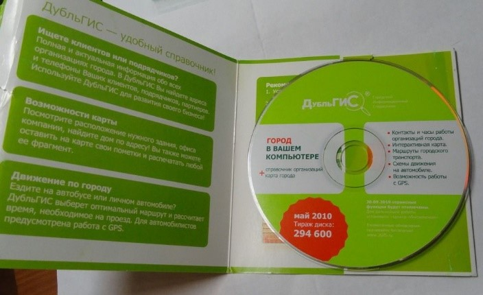 Рис.
28. Дубль-ГИС
– бесплатный
электронный справочник предприятий
с
интерактивной
картой
города
Возможности программного обеспечения, на основе которого реализован данный проект, позволяет выполнять следующие функции: найти на карте любой из объектов: дом по адресу, улицу, жилмассив, район, остановку городского транспорта, железнодорожную станцию, станцию метро; получить дополнительную справочную информацию о находящихся в здании организациях и учреждениях; измерить расстояние между объектами или оценить длину определенного маршрута; распечатать фрагменты карты вместе с информацией о выбранных зданиях или компаниях; делать собственные пометки на плане города, получить отзывы о определенной компании и т. д. Все описанные возможности программы можно отнести к ее достоинствам (рис. 29).
Рис. 29. Внешний вид интерфейса программы Дубль-ГИС «Новосибирск»
К
недостаткам данной справочно-картографической продукции «Дубль- ГИС» можно
отнести отсутствие реальной трехмерности объектов. В данной ГИС представлена
«искусственная» прорисовка трехмерности, авторы программного обеспечения
называют ее «псевдотрехмерным изображением», т. е. по такому изображению нельзя
получить величину высоты зданий и сооружений.
Третья
группа – картографические информационно-обучающие системы.
Учебно-методический
комплекс (УМК) «Живая география»,
разработан ЗАО
«КБ Панорама», Институтом
новых технологий и
ИТЦ в 2015 г.
УМК
включает в себя программную геоинформационную оболочку
с инструментарием для
работы с пространственной информацией, цифровые географические карты мира и
России, цифровые исторические карты России для курса истории отечества, цифровые
исторические карты по Всемирной истории, коллекцию цифровых крупномасштабных
учебных топографических карт, коллекцию космических снимков России, комплект
цифровых контурных карт для всего школьного курса географии (рис.
30).
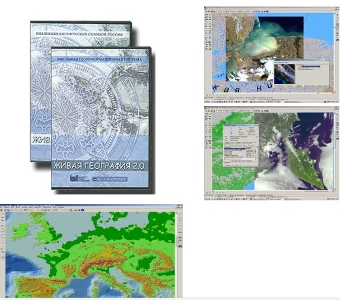
Рис. 30. УМК «Живая география».
Четвертая
группа – информационно-справочные системы.
Одним
из первых в нашей стране мультимедийных картографических произведений была
информационно-справочная картографическая система «Сибирь-неизвестный континент» (рис. 31),
созданный творческим
коллективом на
базе ООО «Сибпромкомплекс» под руководством
Д. В. Лисицкого.
Система была разработана и издана коллективом сотрудников центра «Сибгеоинформ» под руководством Д. В. Лисицкого, Progis-Austria и Новосибирского ГИС-центра СО РАН в англо-русскоязычном варианте (Новосибирск, 1998). В качестве базового программного комплекса была использована ГИС-оболочка WinGIS (Австрия). Система содержит 10 тематических карт и 18 туристических карт-схем городов. Карты представлены в векторном виде. Система обладает функциями поиска, просмотра дополнительных мультимедийных материалов по объектам карты в виде дополнительных справочных материалов с фотографиями и видеороликами.
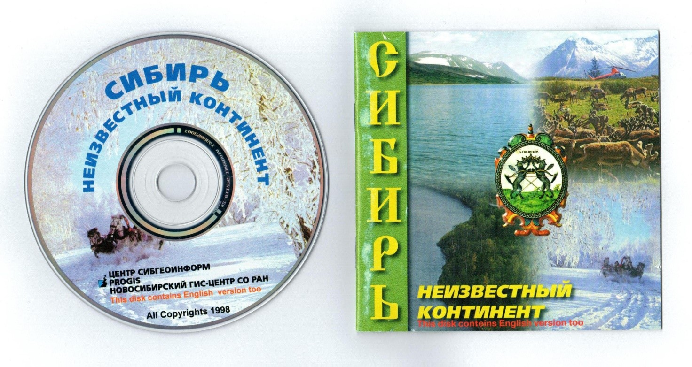
Рис. 31. Информационно-справочная картографическая система «Сибирь – неизвестный континент»
Опыт,
полученный в процессе этой разработки, был затем обобщен и использован в
постановке научных работ СГГА (ныне СГУГиТ) по созданию
справочно-картографических ГИС (СК ГИС) на территории различного уровня [25].
«Большая энциклопедия Кирилла и Мефодия» (БЭКМ) – самое авторитетное в России мультимедийное энциклопедическое издание– уникальное собрание обширной, достоверной и актуальной информации по всем отраслям знаний, которое адресовано широкой аудитории – от школьника и абитуриента до научного сотрудника. Мультимедийная энциклопедия содержит следующий картографический материал: географический атлас мира, карту звездного неба, исторические карты (рис. 32).
Рис. 32. «Большая энциклопедия Кирилла и Мефодия»